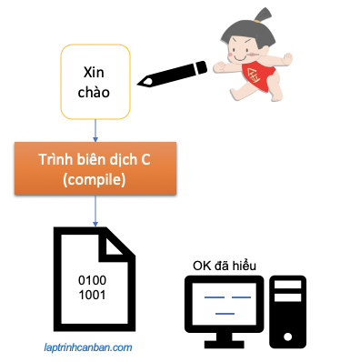
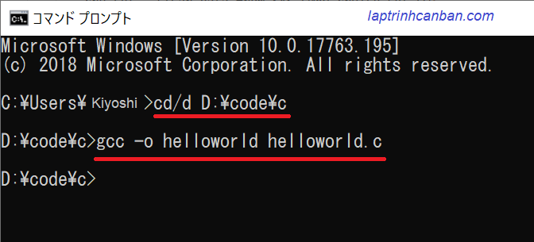
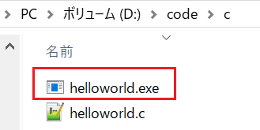
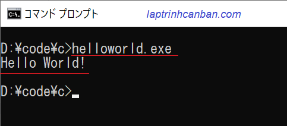

Cùng tìm hiểu về biên dịch trong chương trình C. Bạn sẽ học được khái niệm biên dịch chương trình là gì, quá trình biên dịch trong chương trình C , cũng như cách biên dịch một chương trình C sau bài học này.
Biên dịch chương trình là gì trong C
Trong các bài trước chúng ta đã biết, C là một ngôn ngữ bậc cao và nội dung viết trong đó rất giống với cách viết và suy nghĩ của con người. Tuy nhiên thì trong máy tính chỉ có 2 trạng thái tồn tại đó là có dòng điện chạy qua và không có dòng điện chạy qua, tương ứng với 2 số 0 và 1, do đó máy tính không thể hiểu được nội dung chúng ta đã viết trong mã nguồn của chương trình C đâu.
Và để cho máy tính có thể hiểu ngôn ngữ con người, chúng ta cần phải biên dịch nội dung đã viết sang dạng 1, 0 cho máy tính hiểu. Công việc này được gọi là biên dịch chương trình, hay còn gọi là compile chương trình, và công cụ sử dụng để biên dịch chương trình C được gọi là trình biên dịch.

Quá trình biên dịch trong chương trình C
Để biên dịch một chương trình viết bởi ngôn ngữ C, chúng ta cần trải qua 4 bước sau đây. Các bước này được thực thi tự động trong trình biên dịch của C.

Nguồn: javatpoint.com
Preprocessor (tiền xử lý)
Đây là bước đầu tiên trong quá trình biên dịch chương trình. Tại đây sẽ thực hiện các công đoạn chuẩn bị trước khi chúng ta bắt đầu xử lý chính trong chương trình C.
Nói một cách đơn giản thì nếu việc biên dịch mã nguồn C là công việc nấu cơm thì tại Preprocessing (tiền xử lý) chúng ta sẽ tiến hành chuẩn bị gạo, rửa rau cắt thịt v.v.. trước khi bắt đầu nấu cơm vậy.
Có thể kể đến một số xử lý ở Preprocessing (tiền xử lý) trong biên dịch C như sau:
- Load và đọc các library cần thiết sử dụng trong chương trình
- Mở rộng các marcro được định nghĩa sau từ khóa define
- Xử lý trước các lệnh bắt đầu sau ký tự #
- Xóa comment trong mã nguồn, và biên dịch trước một số bộ phận trong mã nguồn.
Compiler (biên dịch)
Tiếp theo Preprocessor chính là Compiler (biên dịch) - xử lý chính trong trình biên dịch chương trình C.
Dựa vào compiler, mã nguồn được viết trong file C từ ngôn ngữ bậc cao mà con người hiểu được sẽ được biên dịch sang ngôn ngữ assembly ở dạng các mã assembly code. Ngôn ngữ assembly ở đây là ngôn ngữ bậc thấp, là ngôn ngữ trung gian giữa ngôn ngữ bậc cao và ngôn ngữ máy tính, có tác dụng chuyển ngôn ngữ bậc cao sang dạng các chỉ thị 1 đối 1 cho máy tính.
Compiler ở đây theo nghĩa hẹp có nghĩa là quá trình biên dịch mã nguồn C sang ngôn ngữ assembly. Tuy nhiên thông thường thì chúng ta cũng sử dụng Compiler theo nghĩa rộng chính là toàn bộ quá trình biên dịch từ Preprocessor (tiền xử lý) đến Linker (liên kết).
Assembler (tập hợp)
Tiếp theo, trình tập hợp Assembler sẽ chuyển đổi các mã assembly code đã dịch ở Compiler ở trên thành các mã máy tính - loại ngôn ngữ mà máy tính có thể hiểu được. Các mã máy tính này được biểu diễn bởi số 0 và số 1, và được tập hợp trong một file máy tính.
Mặc dù tại giai đoạn này, mã nguồn của chương trình C đã được chuyển thành một file ở dạng mà máy tính có thể hiểu được, nhưng ở giai đoạn này do chúng ta chưa liên kết đủ đủ thông tin trong file, nên file này chưa thể thực thi một cách bình thường được.
Linker (liên kết)
Đây là bước cuối cùng trong biên dịch chương trình trong C. Tại đây, chúng ta sử dụng trình liên kết Linker để liên kết các thông tin còn thiếu như các thư viện (library) chẳng hạn vào file máy tính đã tạo ở Assembler.
Việc liên kết thông tin cuối cùng đã hoàn thành được file máy tính, và chúng ta có thể chạy file này một cách bình thường.
Các trình biên dịch trong C
Để biên dịch chương trình C, chúng ta cần cài đặt và sử dụng các trình biên dịch. Có rất nhiều trình biên dịch miễn phí mà chúng ta có thể sử dụng trong ngôn ngữ C như sau:
Trình biên dịch trong Visual Studio
Sau khi chúng ta cài đặt Visual Studio Community vào máy tính, một trình biên dịch C cũng sẽ được cài đặt kèm theo, và chúng ta có thể sử dụng ngay trình biên dịch này thông qua Developer Command Prompt được tích hợp sẵn sau khi cài để biên dịch C với cú pháp sau:
cl sample.c |
Ngoài ra thì bạn cũng có thể sử dụng Visual Studio để biên dịch một chương trình C++ như sau:
cl sample.cpp |
Trình biên dịch MinGW:
MinGW là một trình biên dịch ngôn ngữ C miễn phí trên Windows. Sau khi chúng ta cài đặt MinGW vào máy tính, chúng ta có thể sử dụng trình biên dịch này để compile chương trình C bằng lệnh sau đây:
gcc - o filename filename.c |
Ngoài ra thì bạn cũng có thể sử dụng MinGW để biên dịch một chương trình C++ như sau:
g++ - o filename filename.cpp |
Trình biên dịch C++ Compiler:
C++ Compiler cũng là một công cụ miễn phí tạo môi trường lập trình C. Sau khi chúng ta cài đặt C++ Compiler vào máy tính, một trình biên dịch C cũng sẽ được cài đặt kèm theo, và chúng ta có thể sử dụng ngay trình biên dịch này với lênh sau đây:
bcc32c sample.c |
Trình biên dịch trong Dev C++:
Dev C++ là một IDE miễn phí tạo môi trường lập trình C. Sau khi chúng ta cài đặt Dev C++ vào máy tính, chúng ta có thể viết chương trình, cũng như biên dịch và chạy trực tiếp các chương trình C và C++ trên IDE này.
Cách biên dịch một chương trình C
Ở phần trên chúng ta đã nắm vững được khái niệm biên dịch trong C, cũng như là các trình biên dịch có thể được sử dụng trong hai ngôn ngữ này.
Sau đây Kiyoshi sẽ hướng dẫn bạn compile một chương trình C bằng cách sử dụng MinGW. Các trình biên dịch khác cũng hoạt động một cách tương tự.
Chúng ta sẽ sử dụng tới file hello.c đã được chuẩn bị trong bài Các viết và lưu chương trình trong C với mã nguồn như sau:
|
Hãy lưu lại file trên với tên helloworld.c tại một thư mục bất kỳ, ví dụ như là D:\code\c\helloworld.c chẳng hạn.
Để biên dịch (compile) file .c trên, trước hết chúng ta mở cmd trên máy tính, sau đó di chuyển đường dẫn trong cmd tới thư mục chứa file c bằng lệnh sau:
cd/d D:\code\c |
Sau đó, hãy chạy lệnh sau đây để tiến hành compile file helloworld.c:
gcc -o helloworld helloworld.c |

Lưu ý là ở đây bạn có thể tùy ý chỉ định tên của file exe sau khi được compile. Ví dụ:
gcc -o a helloworld.c |
Sau khi compile thành công, một file helloworld.exe sẽ được tạo ra trong cùng thư mục với file helloworld.c như dưới đây:

Và lúc này, bạn chỉ cần nhập tên (hoặc đường dẫn) của file exe vừa compile ở trên vào cmd để chạy file là xong.
helloworld.exe |
Và bạn có thể thấy chương trình chạy và in ra màn hình câu chào Hello world! như sau:

Tổng kết
Trên đây Kiyoshi đã cùng bạn tìm hiểu về biên dịch trong chương trình c rồi. Ở bài tiếp theo, chúng ta sẽ cùng học các cách chạy chương trình C phổ biến nhất hiện nay nhé.
URL Link
HOME › lập trình c cơ bản dành cho người mới học lập trình>>03. viết chương trình c